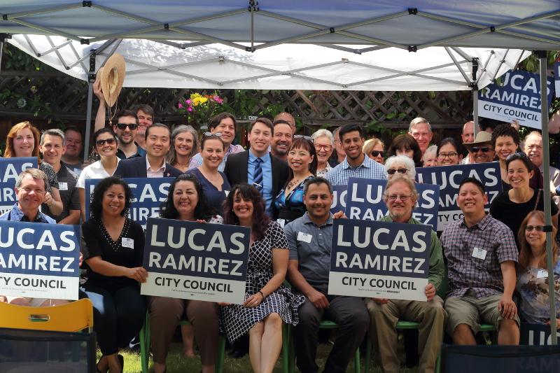
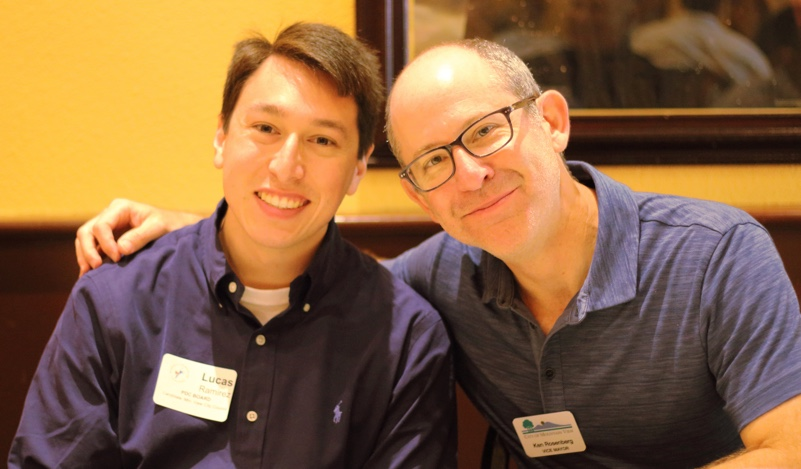

<section>
    <div class="row">
      <div class="large-12 columns">
	  <figure>
	  <div class="orbit" role="region" aria-label="Favorite Space Pictures" data-orbit>
  <div class="orbit-wrapper">
    <div class="orbit-controls">
      <button class="orbit-previous"><span class="show-for-sr">Previous Slide</span>&#9664;&#xFE0E;</button>
      <button class="orbit-next"><span class="show-for-sr">Next Slide</span>&#9654;&#xFE0E;</button>
    </div>
    <ul class="orbit-container">
      <li class="is-active orbit-slide">
        <figure class="orbit-figure">
          
          <figcaption class="orbit-caption">Campaign Kickoff</figcaption>
        </figure>
      </li>
      <li class="orbit-slide">
        <figure class="orbit-figure">
          
          <figcaption class="orbit-caption">Lucas Ramirez and Councilmember Ken Rosenberg</figcaption>
        </figure>
      </li>
      <li class="orbit-slide">
        <figure class="orbit-figure">
          
          <figcaption class="orbit-caption">Campaign Walk Launch</figcaption>
        </figure>
      </li>
      <li class="orbit-slide">
        <figure class="orbit-figure">
          
          <figcaption class="orbit-caption">Lucas Ramirez with Supervisor Joe Simitian</figcaption>
        </figure>
      </li>
    </ul>
  </div>
  <nav class="orbit-bullets">
    <button class="is-active" data-slide="0"><span class="show-for-sr">First slide details.</span><span class="show-for-sr">Current Slide</span></button>
    <button data-slide="1"><span class="show-for-sr">Second slide details.</span></button>
    <button data-slide="2"><span class="show-for-sr">Third slide details.</span></button>
    <button data-slide="3"><span class="show-for-sr">Fourth slide details.</span></button>
  </nav>
</div>
	  
	  
	  </figure>
	  <br><p>Friends,</p>

<p>Two years ago, I was heartened and incredibly grateful to receive the support of dozens of volunteers, hundreds of donors, and thousands of voters. Although my campaign for Mountain View City Council was not successful, I was and remain very proud of the hard work my team put into the effort. My commitment to public service was strengthened, and I will never forget the encouragement and help you gave me in 2016.</p>

<p>With the unexpected news of a vacancy this year, I am once again pleased to announce my candidacy for City Council. I appreciate Councilmember and former Mayor Ken Rosenberg’s four years of service to the city, and I am extremely grateful to have his support.</p>

<p>Despite significant progress over the past several years, there remain several challenging issues that erode the opportunity for both longtime residents and those new to our community to enjoy everything our city has to offer. </p>

<p>The housing crisis and severe traffic congestion continue to threaten the long-term stability and diversity of our community. I will champion sustainable land use policy, increased investment in transportation infrastructure, and jobs/housing balance. The swelling population of RV and other vehicle dwellers has made the intractable struggle of homelessness painfully conspicuous in our neighborhoods. I will work aggressively to implement a safe parking program, enhance homeless outreach and assistance, and provide appropriate enforcement of city laws. I will fight to ensure Mountain View remains a city that is welcoming to both young professionals working hard to raise their families here and seniors on a fixed income seeking to age in place.</p>

<p>As a Planning Commissioner, former two-term Chair of the Human Relations Commission, former appointee to the Valley Transportation Authority (VTA) 2000 Measure A Citizens Watchdog Committee/Citizens Advisory Committee, and longtime City Council observer, I have the experience, skills, and resolve to take on the major challenges facing our community. I have ardently supported policies that increase affordable housing supply and improve the safety, reliability, and convenience of alternative modes of transportation. I successfully advocated for robust campaign finance disclosure requirements, and I will work relentlessly to expand opportunities for civic engagement and resident participation in critical decision-making.</p>

<p>I would be honored to serve you on the City Council, and I look forward to working hard to earn your vote.</p>

	  <p> - Lucas Ramirez</p>
      </div>
    </div>
</section>
